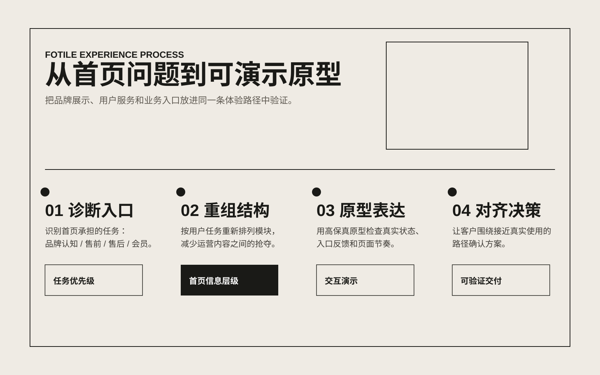
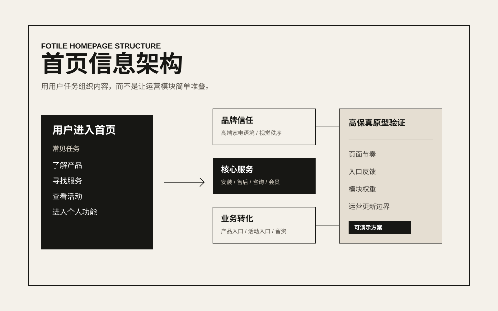
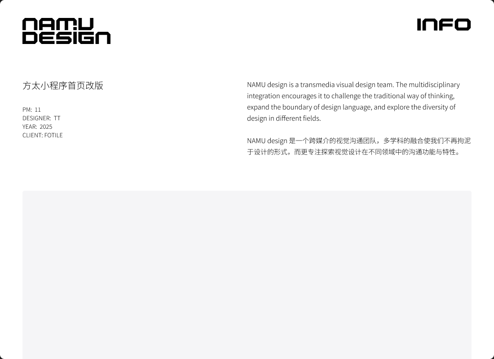

项目背景
家电品牌的小程序首页不是单一营销页面，而是连接产品认知、售前咨询、售后服务和会员运营的复合入口。用户进入首页时，往往带着不同任务：了解产品、寻找服务、查看活动或进入个人相关功能。原有页面如果信息权重不清，会让品牌内容、业务入口和服务动作互相争夺注意力。
设计重点
- 重新整理首页的信息层级，让品牌内容、核心服务和业务入口形成更清楚的先后关系。
- 以用户任务为线索组织模块，而不是简单堆叠运营内容。
- 通过高保真原型呈现真实交互状态，减少静态视觉稿与实际使用之间的偏差。
- 保持方太高端家电品牌的克制质感，同时提升小程序触点的可用性和可理解性。
关键成果
第一版改版方案帮助项目团队更快判断首页应该承担的角色：哪些内容用于建立品牌信任，哪些入口服务用户任务，哪些模块适合运营更新。交付物以可交互高保真原型为核心，让客户能在接近真实使用的路径中确认体验。
Gallery



SEO关键词：方太小程序设计、家电品牌体验设计、小程序首页改版、高保真原型、上海产品体验设计公司。